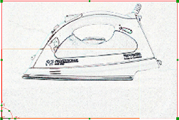

Reorient an existing raster image to the XC-YC plane
-
Open des07_raster_1.
The existing raster image was imported into this part file in the wrong orientation.
the main body of the iron IMAGE must fit into the existing rectangle below.

-
On the Visualize Shape toolbar, click Raster Image
 .
.
-
In the Actions group, click Select New Raster Image.
-
Select the image.
Note
You can also right-click a raster image and choose Edit Parameters instead of opening the dialog.
-
In the Actions group, from the drop-down list, select XC-YC.
The image is reoriented to the current XC-YC plane.
